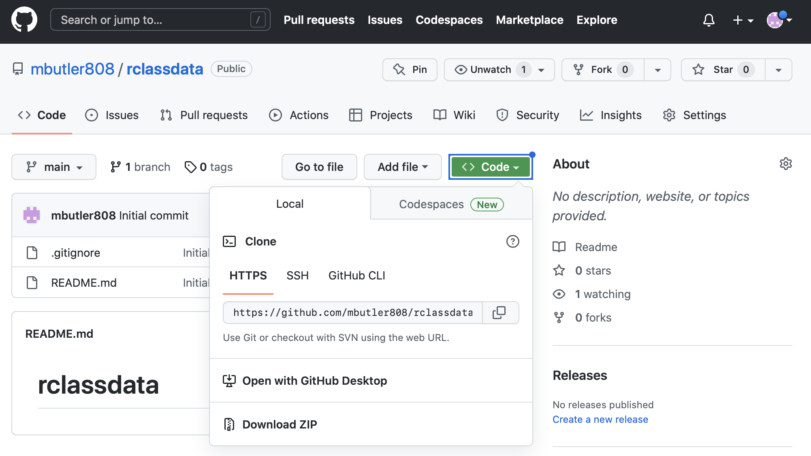
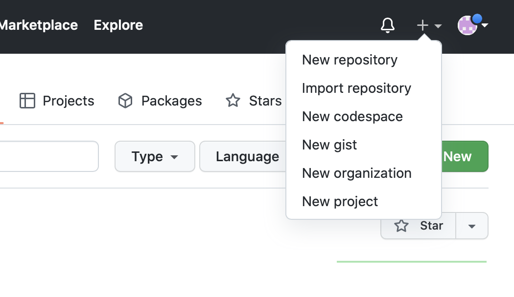
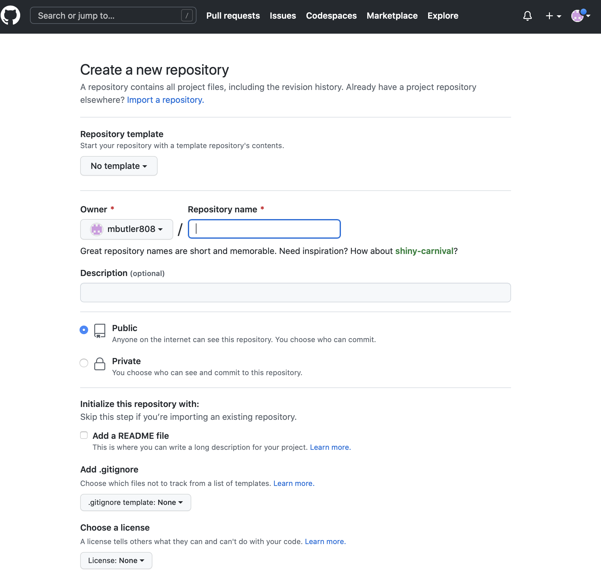
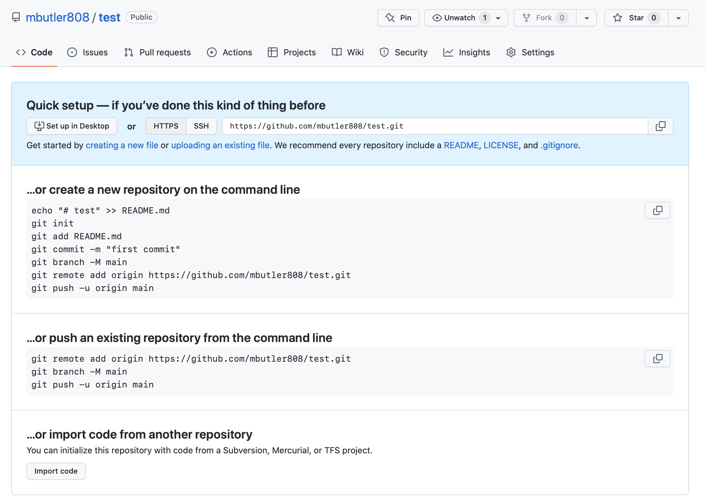
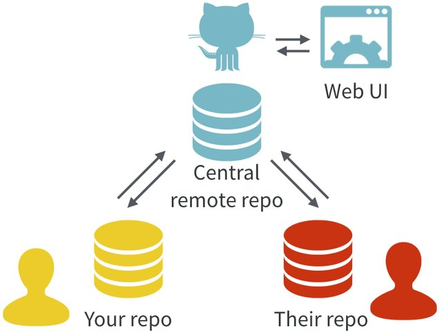

Lecture materials
Note 1: Helpful references for this lecture
- Happy Git with R from Jenny Bryan
-
Chapter on git and GitHub in
dsbookfrom Rafael Irizarry - GitHub introduction in module 1 from Andreas Handel
- Either before or after Tuesday’s class, please watch the podcast GitHub my Computer and me. You can stop at ~11:15:
Acknowledgements
Material for this lecture was borrowed and adopted from
Learning objectives
Learning objectives
Last time, you should have created and set up a GitHub account.
At the end of this lesson you will:
- Know what Git and GitHub are.
- Know why one might want to use them.
- Have created a repo and executed basic push/pull commands.
Introduction to git/GitHub
This document gives a brief explanation of GitHub and how we will use it for this course.
git
Git is software that implements what is called a version control system for a repository of files (also known as a repo). The main idea is that as you (and your collaborators) work on a project, the git software tracks, and records any changes made by anyone.
GitHub is an online server and user interface that provides powerful tools for distribution of your repository, bug tracking, collaboration, and also allows you to create easy websites for each repository.
Git and GitHub together provide an organized way to track your projects, and all of the tools you will need in this course are free.
It is very well suited for collaborative work, as it was developed by Linus Torvalds (in about 10 days of coding!) for collaborative software development of the Linux kernel pretty interesting interview with Torvalds. What it did really well was distributed control, and allowing everyone to have their own copy of the repository.
Git/GitHub is now the dominant version control system with GitHub hosting over 200 million repositories worldwide! It is used very broadly for all kinds of repos now including data science projects, book projects, courses, and anything that needs collaborative management of mostly text files.
Another great and fun read about Git/GitHub and why it is a great tool for data analysis is in this article by Jenny Bryan.
What to (not) use Git/GitHub for
GitHub is ideal if you have a project with (possibly many) smallish files, and most of those files are text files (such as R code, LaTeX, Quarto/(R)Markdown, etc.) and different people work on different parts of the project.
GitHub is less useful if you have a lot of non-text files (e.g. Word or PowerPoint) and different team members might want to edit the same document at the same time. In that instance, a solution like Google Docs, Word+Dropbox, Word+Onedrive, etc. might be better.
GitHub also has a problem with large files. Anything above around 50MB can lead to very slow syncing and sometimes outright failure. Unfortunately, once GitHub has choked on a large file, it can be quite tricky to fix the repository to work again. This is because the ENTIRE history is saved, including the addition of the huge file. Therefore keep large (>50MB) files out of your GitHub repositories. If you have to work with such files, try to reduce them first before placing into the GitHub repository. Or as alternative, place those files in another sync service (e.g. Dropbox, OneDrive, GoogleDrive) and load them from there.
Finally, if you have data, you need to be careful since by default, GitHub repositories are public. You can set the repository to private, but you need to be careful that you don’t accidentally expose confidential data to the public. It is in general not a good idea to have confidential data on GitHub. First anonymize your data (ensure that it is not at risk of identifiability), then you can place it in a private repository. If you put it in a public repo, be very careful!! (And you may need IRB approval, check with your institutional research office.)
Tip
- Git/GitHub has version control features like a turbo-charged version of “track changes” but more rigorous, powerful, and scaled up to multiple files
- Great for solo or collaborative work
- Saves the entire history of every change made
- Allows for multiple verisions or “branches” to be developed and later merged
- GitHub allows distributed collaboration (potentially among complete strangers) and has greatly promoted open-source software development, collaboration, distribution, and bug/issue tracking for users to get help
- GitHub allows webpages for your projects or repositories
Note that other interfaces to Git exist, e.g., Bitbucket, but GitHub is the most widely used one.
Why use git/GitHub?
You want to use GitHub to avoid this:

To learn a bit more about Git/GitHub and why you might want to use it, read this article by Jenny Bryan.
Note her explanation of what’s special with the README.md file on GitHub.
How to use Git/GitHub
Git/GitHub is fundamentally based on commands you type into the command line. Lots of online resources show you how to use the command line. This is the most powerful, and the way I almost always interact with git/GitHub. However, many folks find this the most confusing way to use git/GitHub. Alternatively, there are graphical interfaces.
- GitHub itself provides a grapical interface with basic functionality.
- RStudio also has Git/GitHub integration. Of course this only works for R project GitHub integration.
- There are also third party GitHub clients with many advanced features, most of which you won’t need initially, but might eventually.
Note: As student, you can (and should) upgrade to the Pro version of GitHub for free (i.e. access to unlimited private repositories is one benefit), see the GitHub student developer pack on how to do this.
Getting Started with git
One of my favorite resources for getting started with git/GitHub is the Happy Git with R from Jenny Bryan (especially for Rstudio users):
It is one of the most comprehensive resources out there for getting started with git/GitHub. I will encourage all of you to go read through the online book. Some of you may only need to skim it, others will need to spend some time reading through it. Either way, I hope you will agree it is a worthwhile investment to understand the basics as well as to know you can get help.
Set up your profile in git on your computer
Before making changes to your repository, GitHub will want to verify your identity.
In order for your computer to talk to GitHub smoothly, you will need to set up your username and email in the git profile stored on your computer.
Warning
Be sure to match your GitHub account username and email! Otherwise GitHub wonʻt know who you are
Terminal
git config --global user.name 'GitHubUsername'
git config --global user.email 'GitHub_email@example.com'
git config --global --listThat last line will show all of your current git config settings.
If you are using Rstudio, easy directions are provided here https://happygitwithr.com/hello-git.html
Set up your Personal Authentication Token on your computer
GitHub will also want to check your credentials to authenticate you are really you before writing changes to your repo.
There are several ways to do this, but the easiest is the protocol for HTTP authentication. You will generate a Personal Access Token for HTTPS from your GitHub account which will be stored on your personal machine.
I prefer the GithHub command line interface or gh to do this. To install the CLI, follow the instructions here for your operating system. For Mac users, I suggest that you install homebrew, it is a command-line general software manager for many different software packages.
Storing your Personal Access Token
- From GitHub: Generate your personal access token instructions
- Find the token generator on GitHub under your User Icon > settings > developer settings (left side bar) > Personal access tokens > Tokens (classic) > Generate new Token > classic note this menu may change
- Select at least these scopes: “admin:org”,“repo”, “user”, “gist”, and “workflow”
- From your Command Line: Use
gh auth loginto store your token and follow the prompts.- select
HTTPSfor your preferred protocol - select
Yfor authenticate with GitHub credentials - Alternatively if you want to do this all from the command line you can run the following line (if your token is saved in
mytoken.txt):
Terminal
gh auth login --with-token < mytoken.txt - select
Many more details are explained nicely here https://happygitwithr.com/https-pat.html
You only have to store your credentials once for each computer (or PAT expiration date), then you can push and pull from GitHub to your heartʻs content. It really is a nice way to do things securely.
Configuring your default git editor
You may want to set your default git editor to something you know how to use (it will come up when you have a merge conflict).
For example the nano editor is easy to use on the command line for a Unix shell:
Mac/Linux
git config --global core.editor "nano -w"The Carpentries provide a full list of editors by operating system, a great resource.
Using git/GitHub in our course
In this course, you will use git/GitHub in the following ways:
- Project 0 (optional) - You will create a website introducing yourself to folks in the course and deploy it on GitHub.
- Projects 1-3 - You can practice using git locally (on your compute environment) to track your changes over time and, if you wish (but highly suggested), you can practice pushing your project solutions to a private GitHub repository on your GitHub account (i.e.
git add,git commit,git push,git pull, etc).
Learning these skills will be useful down the road if you ever work collaboratively on a project (i.e. writing code with other people, or suggesting changes or bug fixes to other projects). In this scenario, you will use the skills you have been practicing in your projects to work together as a team in a single GitHub repository.
Clone a repo to your local directory - Easy!
Cloning an existing repo from GitHub is easy. Letʻs clone the rclassdata repo to our local git folder within your Documents folder. 1. Go to https://github.com/mbutler808/rclassdata and click on the green <>Code button and copy the URL.

- In your Terminal, Git-Bash, or CMD prompt, navigate to your git folder (create one in Documents if you donʻt have one already), and clone the repo:
Terminal(Mac/Linux/Git-bash)
pwd
cd ~/Documents/git # navigate to your git folder
git clone https://github.com/mbutler808/rclassdata.gitCMD(Windows)
dir
cd ~/Documents/git # navigate to your git folder
git clone https://github.com/mbutler808/rclassdata.gitIf you set up your personal access token, it should appear on your computer! If not, go back to Section 4.2 and try again.
Make a GitHub repo started from your local files
Suppose you have some files on your computer and youʻd like to make them into a repo. For this example, weʻre going to make a repo called test
- Create a folder in your
Documents/gitdirectory calledtestand copy some files there. - Go to your GitHub account and create a new repository. Click on the small black + on the top right corner

- Give your new repo a name (“test”) and choose to create a blank repo with no README.md or .gitignore. We can add them later.

- You will see the following page giving you helpful hints for linking your GitHub repo with your local repo. We will follow the first set of instructions, slightly modified.

Explantations for each line of code:
-
echo "# test" >> README.mdWrite# testtoREADME.mdwhich will be created since it doesnʻt already exist -
git initIntializes the local repo to set up git tracking (only need to to this once for each repo) -
git add .Adds (. = all) our files and commits any changes to the repo -
git commit -m "first commit"Commit message -
git branch -M mainRenames the local branch to main -
git remote add origin URLConnect the remote repo (=“origin” on GitHub) to our local repo. Be sure to copy the appropriate URL for your own GitHub repo. -
git push -u origin mainPush our local changes (in main) up to the remote (to a parallel branch “main” on origin).
Terminal
echo "# test" >> README.md
git init
git add .
git commit -m "first commit"
git branch -M main
git remote add origin https://github.com/mbutler808/test.git
git push -u origin main
GitHub requires authentication to overwrite your repository (this is a good thing 😃👍)
- Did GitHub complain that it doesnʻt know your username or email?
This might be because the defaults on your computer donʻt match what you used to register for your GitHub account. Not to worry, just set it to match your GitHub account here: Section 4.1
- Did GitHub complain that your authentication failed?
Donʻt worry, just try it again: Section 4.2. Nice bonus, you only have to do it once for each computer.
- Check your remote repo. The files from your computer should be there!
- Now try pushing up another change. Make some edits to one or more local files.
- Add, Commit, Push:
Terminal
git add .
git commit -m "made a small change"
git push origin mainCheck your remote repo. Did it go up? Well done! 😍
Your local files and your GitHub repository files are now synced!

- The nuclear option
If you need to start over you can delete and remake your repos. (For example if you canʻt get your local and remote repos to communicate and you canʻt figure out why.)
Since your GitHub repo is empty and youʻre just getting started, there is really no harm in deleting it and starting over. From your repo on github.com, go to settings, then scrolll all the way down until you reach The Danger Zone where you will find the Delete this repository button.
If you just want to delete your local git tracking without deleting all of the files you created, you can just delete your local hidden .git directory, leaving the rest of the files and directories in place. From your command line:
NOTE: This will delete your local git history, and is not reversible.
Terminal
rm -rf .gitA word about merge conflicts
Sooner or later, you will encounter a merge conflict. That happens if the same file(s) changed both locally and on GitHub.com. That can happen if multiple people work on the same files, or if you work on multiple computers and forget to always push/pull before and after you work on a project. Donʻt get discouraged, this is solvable!
Sometimes you have to do it manually. Moving the offending files out of your local repository, then doing the merge and after that adding the updates again can help. If you know that one source is the definite one, you can force a push or pull. A more advanced approach is to use branches.
Terminal
git push --force
Warning
- The main danger is that a force push or pull will force git to write over a conflict, and can possibly destroy someone elseʻs work. If youʻre the only one on the repo, then itʻs only your changes that youʻll lose
- Just be aware but donʻt be afraid to practice. You can always revert back.
- See the help page for git push. See the -f or –force flag. Itʻs terse computer help, but if you make the effort it will start to make sense.
- Iʻll link a more tutorial type resource later
Forking a repo
When you want to build on someone elseʻs repo, that is a great time to fork a repo. This happens when you donʻt have write permission to the repo, but you want provide suggestions (for example if you want to fix a bug). Or if you want to use that repo as a template or a launching off point for your own project.
After you fork and clone the repo to your computer, you can edit, add, and commit the changes. When you are ready to submit the suggestions to the repo owner, start a pull request. They will then read over your suggested edits, and if they approve they can merge the changes into the working repo.
Forks are nice because they remain connected to the parent repo in GitHub. So you can seamlessly work on your own private copy and send it back to the original project when you are ready.
Branches work in a similar way. The idea is simple. If you have a working repo, you donʻt want to made edits or experimental changes to main that may break the functionality. Branches are a way to make a “development branch” where you can work on your ideas in private without breaking anything. When youʻre sure you have everything ironed out and working, you can merge your branch back to main, and delete your branch. They are meant to be an ephemeral scratch copy to keep the project clean, organized, and working perfectly.
Post-lecture materials
If you haven’t already done so, please watch the podcast GitHub my Computer and me (see Note 1 #4).
Final Questions
Here are some post-lecture questions to help you think about the material discussed.
Questions
What is version control?
What is the difference between git and GitHub?
What are some benefits and case uses for repositories with version control using git and GitHub?
Additional Resources
Tip
-
git and GitHub in the
dsbookby Rafael Irizarry